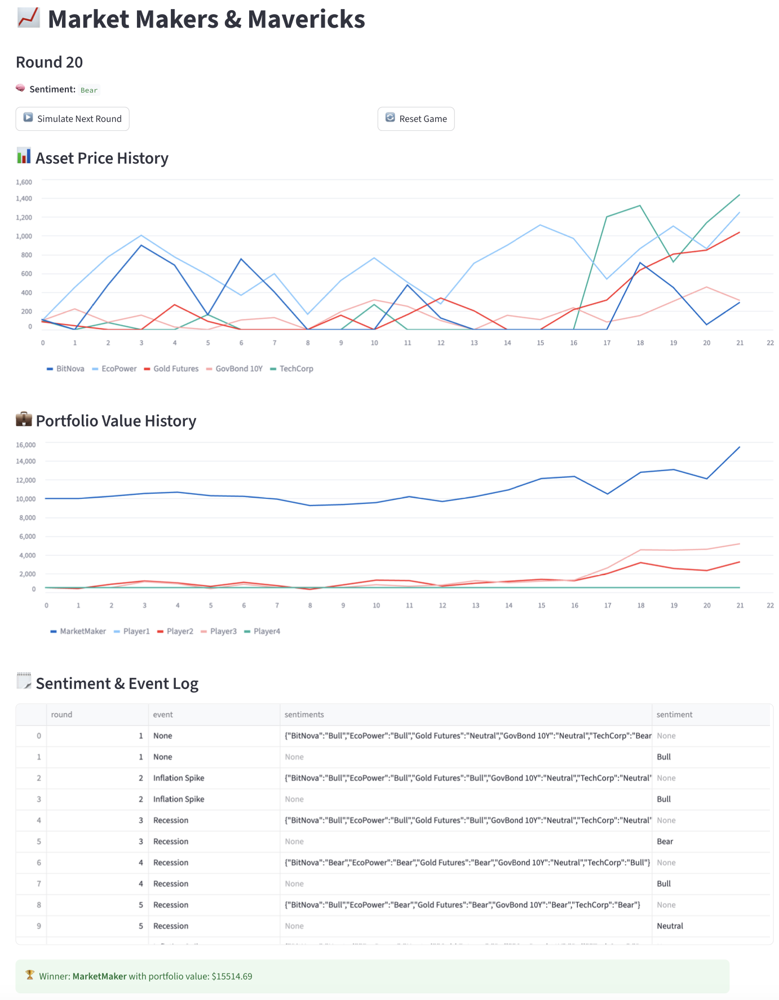
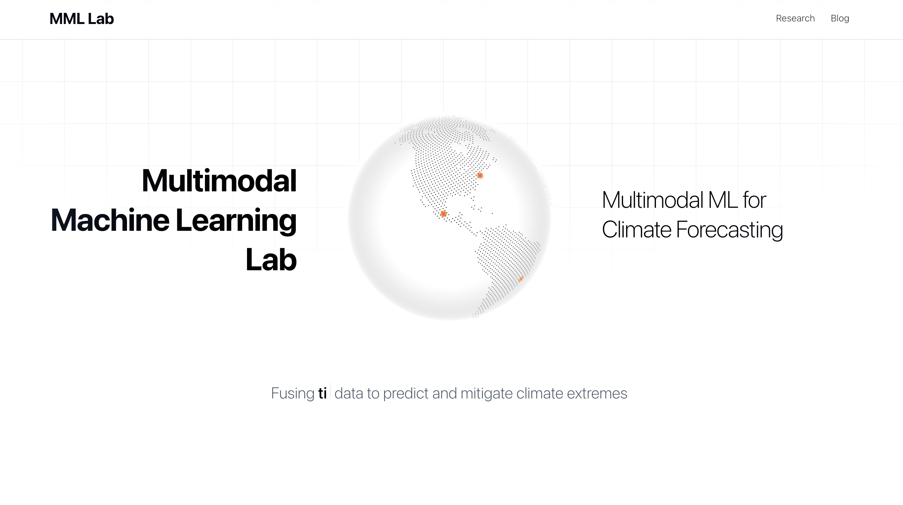

Projects
Here are a few selected projects I've built:

Market Game
A game-based economic simulation blending macro models with blockchain mechanics for realistic market behavior.
View Project →

Weather Forecasting Model (NYU-AD Lab)
A multimodal machine learning system for flood/drought prediction using multimodal machine learning techniques.
View Project →Bond Trading Analytics
AI-powered analytics tools developed for bond desks in New York and China, focusing on risk assessment and yield optimization.
View Project →Fast Monte Carlo Greeks
Estimate Delta and Vega of European options using Monte Carlo simulation, but optimize for runtime.
View Project →Jazz Pattern Recognition
Machine learning analysis of jazz improvisation patterns, exploring the mathematical structures underlying musical creativity.
View Project →